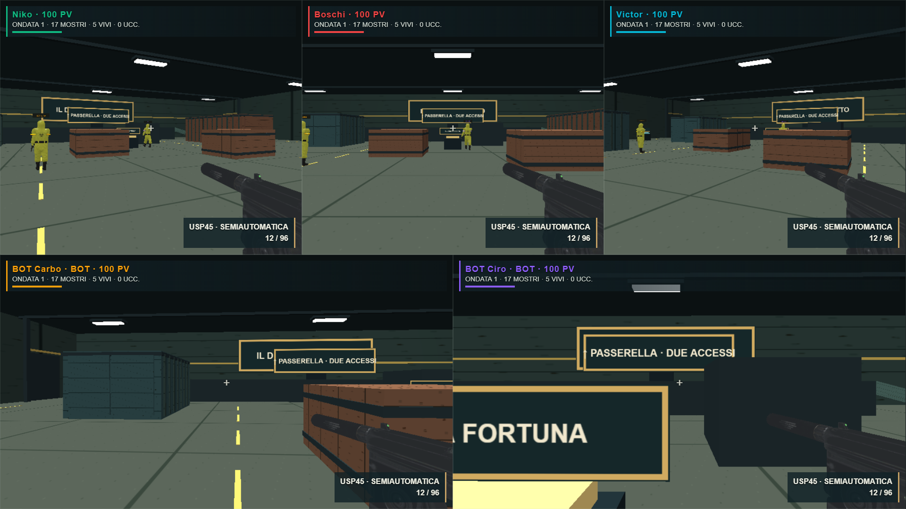
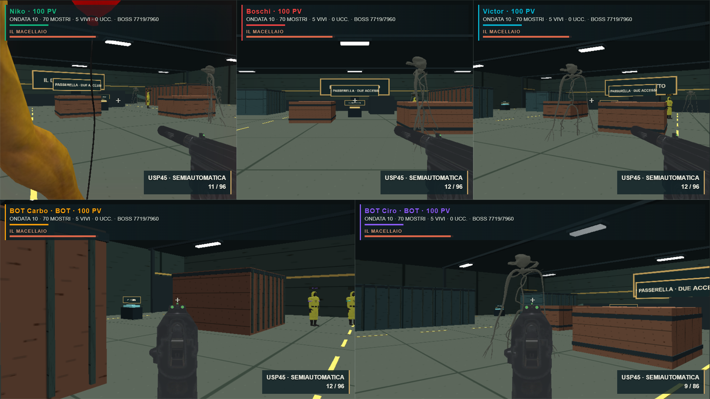
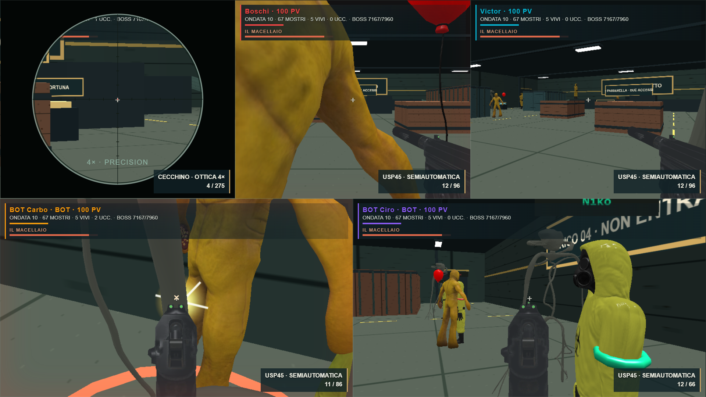
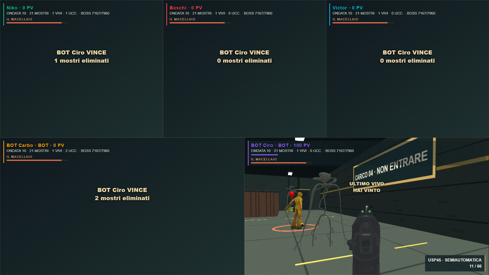

PARTY GAME · NUOVO MINIGIOCOORDA FINALE
L’ULTIMO VIVO VINCE · Il Deposito Infetto · 2–5 giocatori
Cinque archetipi, Macellaio ogni cinque ondate, sei armi, rifornimenti e nessuna seconda vita.
44.1 FPS · cinque visuali a 1669×939 interni su RTX 3050. Campione controllato di sei secondi; dettagli e limiti nel report.
Report breve · Verifiche · Apri Party Game

Prima ondata · cinque visuali
Ondata avanzata · Il Macellaio
Armi e ottica del cecchino
Ultimo vivo · vittoria